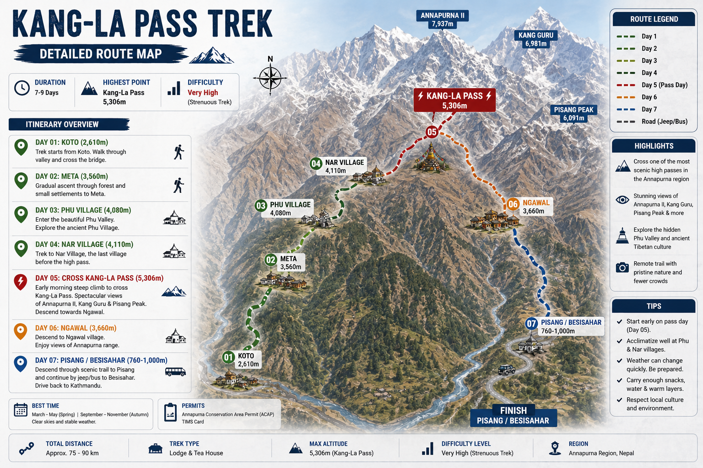

Kang-La Pass connects the mystical Nar-Phu valley with the popular Annapurna Circuit. This trek takes you through remote Tibetan-style villages, ancient monasteries, and offers a breathtaking 360-degree view of the Annapurna massif.
The Hidden Trail of Nar-Phu

(Crossing from Nar Village to the Annapurna Circuit)
Watch our detailed documentary of the Kang-La Pass trek.
▶ Watch on YouTube